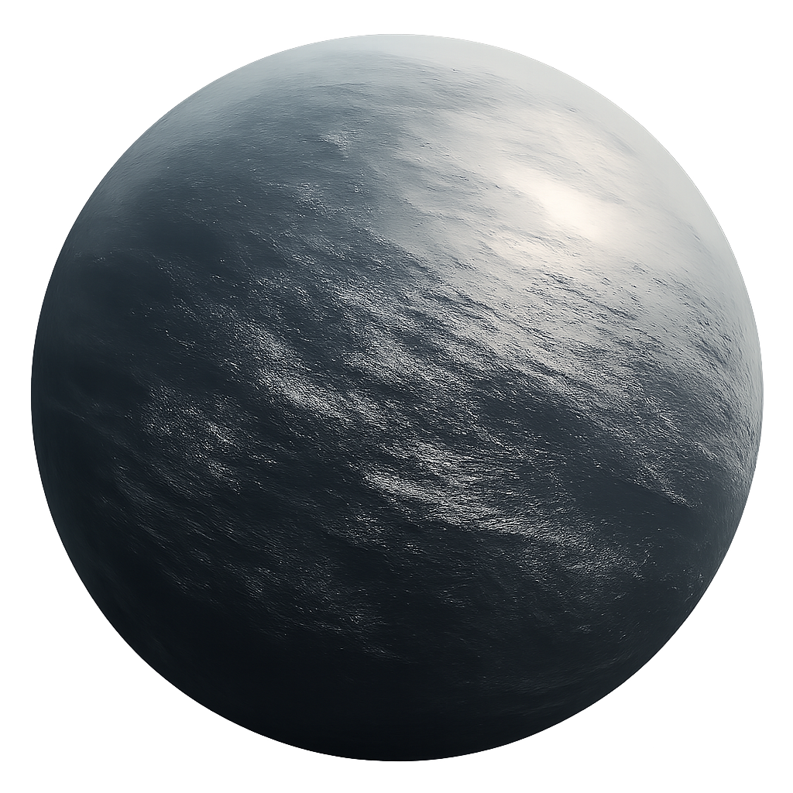
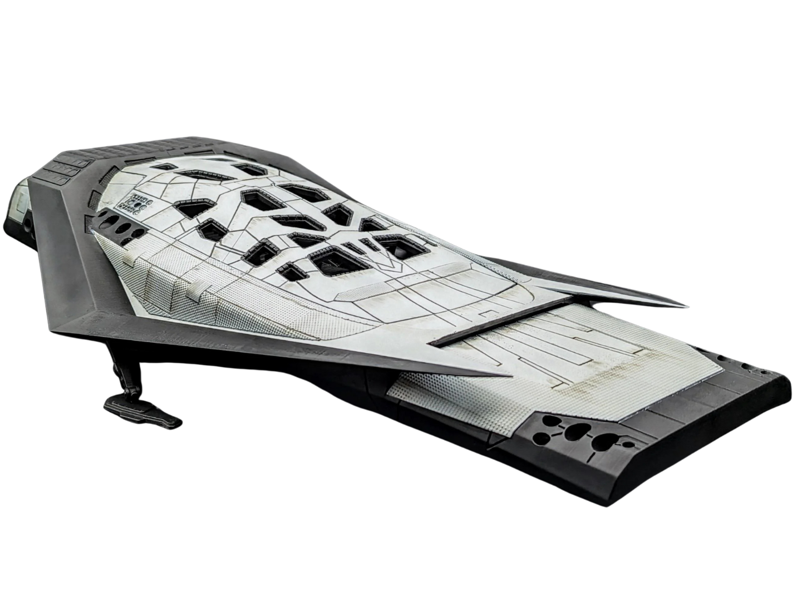
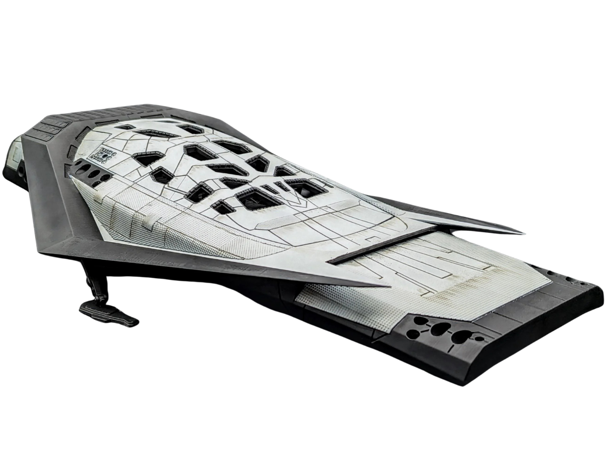

El Mundo Acuático de Miller
Un océano sin fin donde cada segundo es una eternidad.
La Trampa del Tiempo
Océano Superficial
Un planeta cubierto por un océano de apenas un metro de profundidad, pero con olas colosales de más de un kilómetro de altura, generadas por la inmensa fuerza de marea de Gargantúa.
Dilatación Temporal Extrema
Debido a su proximidad con el agujero negro, el tiempo en Miller se ralentiza drásticamente. Una hora en su superficie equivale a siete años en la Tierra, convirtiendo cada minuto en una decisión crítica.
Sin Tierra Firme
No hay superficie sólida visible. La única 'tierra' son los restos de la misión de Miller, esparcidos por el agua y azotados por las olas gigantescas que barren el planeta periódicamente.
 

La Tragedia de Miller
La astronauta Laura Miller fue la primera en aterrizar, transmitiendo datos positivos que sugerían la presencia de agua y química orgánica. Sin embargo, su baliza dejó de transmitir poco después, probablemente destruida por una de las olas masivas.
La tripulación del Endurance llega para encontrar solo los restos de su nave, descubriendo demasiado tarde que los datos positivos eran una trampa mortal causada por la dilatación temporal.
El Costo de la Misión
La visita a Miller resulta en una catástrofe. La pérdida de Doyle y de 23 años de tiempo terrestre debido a un error de cálculo deja a la misión con recursos críticamente bajos y a la tripulación enfrentando las devastadoras consecuencias de sus decisiones. Este evento marca un punto de inflexión, forzando a Cooper y Brand a reconsiderar sus opciones y el verdadero precio de salvar a la humanidad.